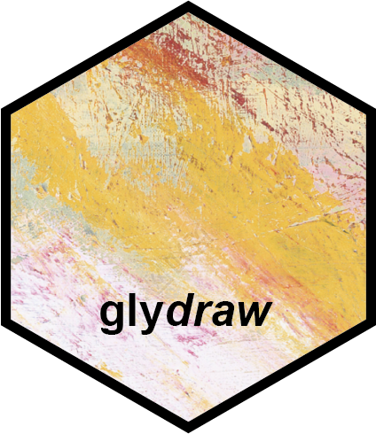
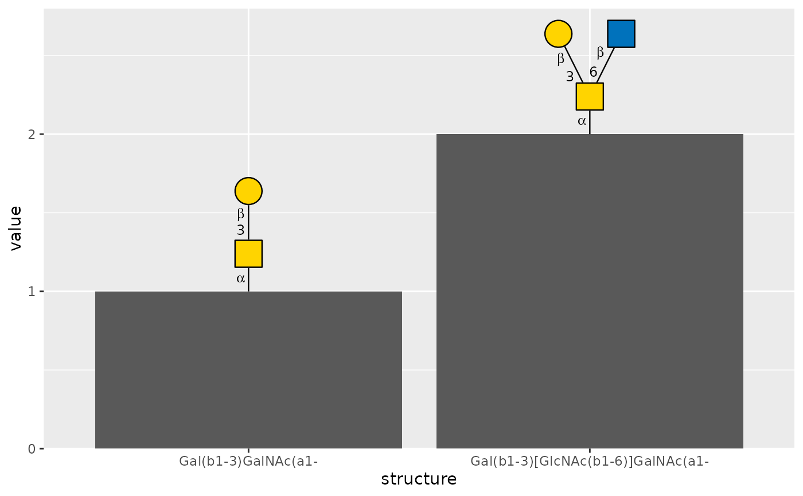

Fit glycan cartoons to the available plotting space
Source:R/auto-glycan-size.R
auto_glycan_size.RdUse auto_glycan_size() as the size argument of geom_glycan(),
geom_node_glycan(), scale_x_glycan(), scale_y_glycan(),
guide_glycan(), or anno_glycan() to fit complete cartoons uniformly.
Nodes, linkage text, lines, and spacing shrink together. Cartoons in the
same panel, axis, legend, or heatmap annotation slice share a scale factor,
preserving their relative residue sizes.
Value
An automatic sizing specification accepted by glycan plotting interfaces. It is not a ggplot2 aesthetic value.
Details
Panel cartoons fit inside the panel and between neighbouring anchors, and occupy at most 30% of its width or height. Axis and heatmap labels fit their row or column spacing; their reserved width or height is initially limited to 20% of the graphics device. Their size is refined when drawn in the actual annotation viewport. Legend cartoons fit a device-based budget for the complete collection of labels. These limits are layout heuristics; automatic sizing does not detect other plot layers or move anchors. Anchors on a panel boundary still need scale expansion, and coincident anchors still overlap. Extremely dense figures may need a larger output device to keep linkage text readable.
Supply a numeric size instead to retain a fixed whole-cartoon multiplier.
A mapped numeric size aesthetic in a glycan layer also uses fixed sizing;
use ggplot2::scale_size_identity() for literal multipliers.
Examples
glycans <- data.frame(
structure = c("Gal(b1-3)GalNAc(a1-", "Gal(b1-3)[GlcNAc(b1-6)]GalNAc(a1-"),
value = c(1, 2)
)
ggplot2::ggplot(glycans, ggplot2::aes(structure, value)) +
ggplot2::geom_col() +
geom_glycan(
ggplot2::aes(structure = structure),
size = auto_glycan_size(max_size = 0.7),
orient = "up",
vjust = 0
) +
ggplot2::scale_y_continuous(expand = ggplot2::expansion(mult = c(0, 0.4)))
